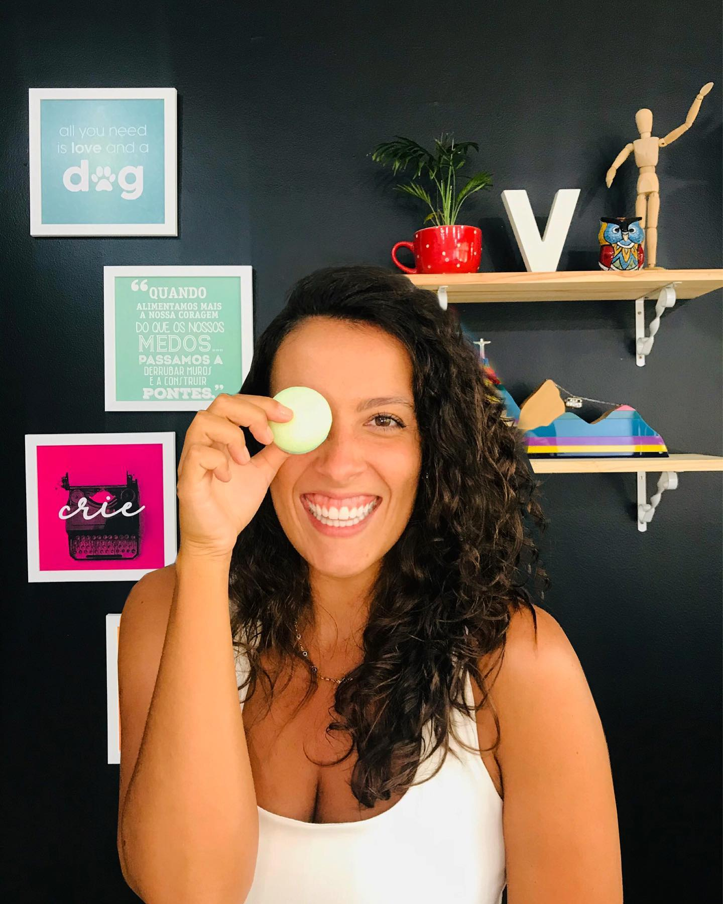

Daphine Beylouni
Arquiteta
O escritório
Arquitetura
Arquitetura
que transforma.

Um escritório fundado na crença de que arquitetura transforma não apenas espaços — mas a maneira como vivemos.
Combinamos rigor técnico com sensibilidade estética para criar ambientes que dialogam com quem os habita. Cada projeto parte de uma escuta profunda, de um entendimento genuíno das necessidades e sonhos dos nossos clientes.
Acreditamos que o espaço pode ser um instrumento de bem-estar — e é com essa convicção que nos dedicamos a cada detalhe, do conceito à entrega.
